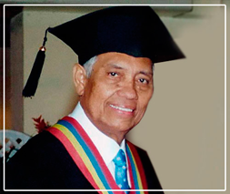

NUESTRO FUNDADOR
Dr. Raúl Quero, Economista egresado de la Universidad del Zulia; especialista en Historia Social y Económica de Venezuela en la Universidad Santa María, con Maestría y Doctorado en Historia, en la misma universidad; asi como obtuvo el doctorado Honoris Causa en la Universidad Bicentenaria de Aragua.

Fue presidente del centro de estudiantes del liceo Rafael María Baralt, Presidente del centro de estudiantes de la Universidad del Zulia durante tres años consecutivos. Presidente de la residencia estudiantil de la Universidad del Zulia. Se desempeñó como maestro de aula en los grados 1ro, 2do, 3ro, 4to, 5to y 6to en la escuela Gabriela Mistral de Maracaibo. Docente de física y matemáticas en la escuela normal “Alejandro Fuenmayor” e Instituto Latino en Maracaibo.
Obtuvo el título de Gerente Gubernamental obtenido en el Instituto de Altos Estudios de la Defensa Nacional – Curso XII. Ejerció como director de personal de la Universidad de Oriente durante 8 años, siendo miembro de la junta directiva de la asociación de profesores de la misma universidad. Analista de la oficina central de personal de la Presidencia de la República. Analista de personal de la comisión de Administración Publica.
Profesor de Teoría Económica y de Administración de Personal de la Universidad de Oriente. Profesor de Administración de Personal de la Escuela de Administración Comercial de la Universidad Central de Venezuela. Profesor de Relaciones Laborales y Contratación Colectiva del Instituto de Mejoramiento Profesional del Colegio de Ingenieros.
Fue profesor de Teoría Económica I y de Administración de Personal de la Universidad Metropolitana. Director de la escuela de Ciencias Administrativas de la Universidad Metropolitana. Profesor de Teoría Económica I, Teoría Económica II, Teoría Económica III, Introducción a la Economía, Teoría y Práctica Monetaria, Administración de Personal I, Administración de Personal II, Relaciones Laborales y Contratación Colectiva en el Instituto Universitario de Tecnología “Antonio José de Sucre” durante 18 años. Director de la Escuela de Administración del Instituto Universitario de Tecnología “Antonio José de Sucre”. Sub-Director del Instituto Universitario de Tecnología “Antonio José de Sucre”. Director del Instituto Universitario de Tecnología “Antonio José de Sucre”, Sede Caracas. Fundador del Instituto Universitario de Tecnología “Antonio José de Sucre” en las ciudades de Maracaibo, Barquisimeto, Barcelona, Valencia, Maracay, Mérida, Puerto Ordaz, Barinas, San Cristóbal, San Felipe, Punto Fijo, Guarenas, Aragua de Barcelona, Porlamar, Ciudad Bolívar y Anaco. Director Nacional del Instituto Universitario de Tecnología “Antonio José de Sucre”.
Fundador y presidente del Consejo Superior de la ilustre Universidad Fermín Toro en la ciudad de Barquisimeto. Fundador de la Universidad Bicentenaria de Aragua. Fundador del Colegio Universitario Fermín Toro en Barquisimeto.
Fundador y Director Nacional del Instituto Universitario Politécnico “Santiago Mariño” con sede en la ciudad de Barcelona y extensiones en las ciudades de Caracas, Valencia, Maracay, Cabimas, Maracaibo, Maturín, Mérida, Puerto Ordaz, San Cristóbal, Barinas y Porlamar.
El Dr. Raúl Quero Silva es miembro fundador de la Organización Universitaria Interamericana con sede en Québec, Canadá. Ha sido presidente de la Asociación de Colegios e Institutos Privados de Venezuela. Entre los reconocimientos y condecoraciones recibidas se destacan: - Orden "Relámpago del Catatumbo", otorgada por el Gobierno del Estado Zulia. - Condecoración “Gran General en Jefe Bartolomé Salom en el grado de Comendador” otorgada por el Concejo Municipal de Puerto Cabello en el Estado Carabobo. - Orden "Cruz del Táchira" otorgada por el Concejo Legislativo del Estado Táchira. - Orden "Ciudad de Barcelona" del Concejo Municipal de Bolívar en el Estado Anzoátegui. - Orden "Juan Jacinto Lara" de Barquisimeto. - Orden "Ciudad de Valencia" en su 2da clase. - Orden "Ciudad de Mérida" otorgada por el Concejo Municipal del Libertador de ese Estado. Condecoración "Andrés Bello" en su 2da Clase. - "Honor al Mérito" en su Unica Clase otorgada por la Asamblea Legislativa del Estado Carabobo. - Condecoración "12 de Febrero" en su 1ra. Clase del Distrito Mauroa del Estado Falcón, entre otras.